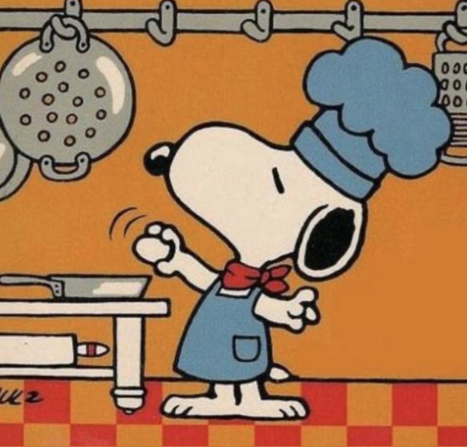

I'm an avid badminton player who used to compete provincially. I've lead my school team to third place in the province and even won a few tournaments here and there.
I enjoy working out weekly for both my physical and mental health.
I love martial arts! I've done Muay Thai and Boxing.
Music is one of the most important things in my life. I used to play clarinet in my school band and jazz club. I can also play a bit of guitar. I love many genres of music like Jpop, R&B, Jazz, and many more.
Eating delicious meals and enjoying desserts is what I live for, and I also like to cook when I have time!

I enjoy cooking, just like Snoopy. This section is dedicated to Xiaohei, my grandma's awesome dog.